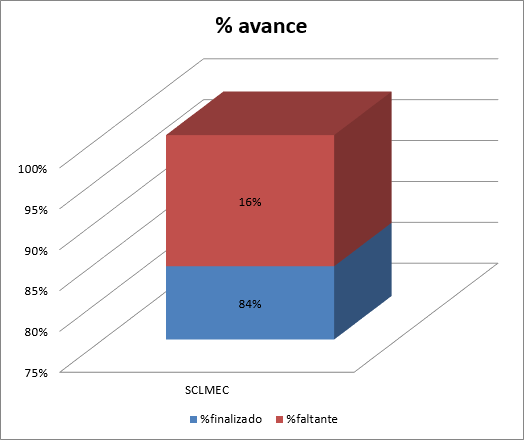
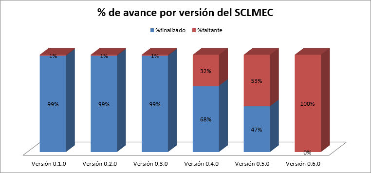
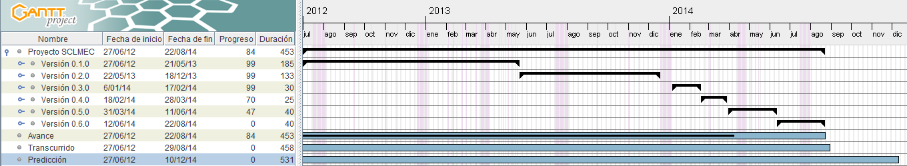

| Proyecto: | Sistema de Control de Mantenimiento de Equipo de Cómputo |
|---|---|
| Fecha del Reporte de Estado: | 29/08/2014 |
| Número Interno de la Versión: | 0.1.0 |
|
Cuestiones Abiertas:
|
4 - Codificación de características 12 - Documentación ténica de características 27 - Documentación de usuario de características |
| Cuestiones Cerradas: | 23 - Codificación de características 15 - Documentación técnica de características |
| Recursos usados en este periodo: | 2 Líderes de proyecto 10 Desarrolladores |
| Resumen del Estado: | Total del sistema: 84% completado, 16% faltante. |
| Documentos Relacionados: |
Estado al 29 de Agosto de 2014

| Resumen del proyecto | |||||||||
|---|---|---|---|---|---|---|---|---|---|
| Actividades | Fecha de inicio | Fecha de finalizado | No. Días | %finalizado | %faltante | Fecha Actual | Días transcurridos | %planeado | %desfase |
| Proyecto SCLMEC | 27/06/2012 | 22/08/2014 | 453 | 84% | 16% | 29/08/2014 | 458 | 101% | 17% |

| Resumen por versiones | |||||||||
|---|---|---|---|---|---|---|---|---|---|
| No. de Tarea | Tareas | Fecha de inicio | Fecha de finalizado | No. Días | % del Proyecto | %finalizado | %faltante | Avance en días | Días faltantes |
| 1 | Versión 0.1.0 | 27/06/2012 | 21/05/2013 | 185 | 41% | 99% | 1% | 183.15 | 1.85 |
| 2 | Versión 0.2.0 | 22/05/2013 | 18/12/2013 | 133 | 29% | 99% | 1% | 131.67 | 1.33 |
| 3 | Versión 0.3.0 | 06/01/2014 | 17/02/2014 | 30 | 7% | 99% | 1% | 29.7 | 0.3 |
| 5 | Versión 0.4.0 | 18/02/2014 | 28/03/2014 | 25 | 6% | 70% | 30% | 17.5 | 7.5 |
| 6 | Versión 0.5.0 | 31/03/2014 | 11/06/2014 | 40 | 9% | 47% | 53% | 18.8 | 21.2 |
| 7 | Versión 0.6.0 | 12/06/2014 | 22/08/2014 | 40 | 9% | 0% | 100% | 0 | 40 |
| Total | 27/06/2012 | 22/08/2014 | 453 | 100% | 84% | 16% | 380.82 | 72.18 | |
Resumen actual de la planeación

Se agregó la fila "Predicción" al plan, la cual permite identificar la fecha probable de entrega del sistema en base al último estado.
| Riesgo | Mitigación |
|---|---|
| Puede existir un retraso en la planeación dado que existen características que pudieran cambiar por que se encuentran en análisis por parte de los clientes para la mejora de su proceso. Por ejemplo: C-23 Verificar y C-26 Garantía. | Para mitigarlo se continuó con el desarrollo de las características de versiones superiores que no dependen de estas características. |
| Retraso en el proyecto por no preveer carga de trabajo de inicio de semestre. | Acordar restructuración de planeación en conjunto con LMEC y la Dirección. |
| Retraso en el proyecto por no preveer cambio de equipo de desarrollo. | Asignar más practicantes al equipo de trabajo. |
| Actividad | Fecha |
|---|---|
| Liberación de versión 0.1.0, 0.2.0 y 0.3.0 | 30 de Septiembre de 2014 |
{kind=link}